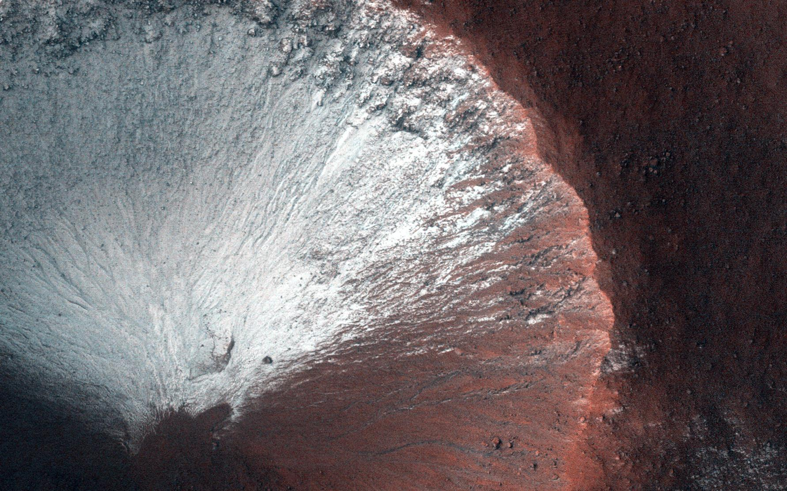
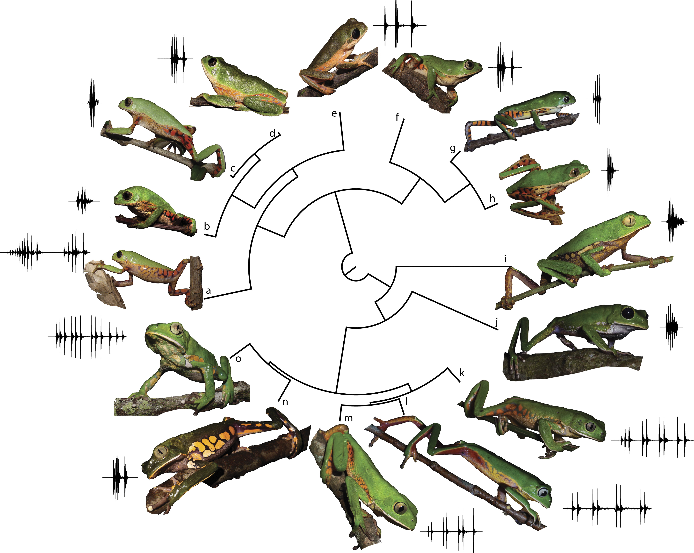

This project aims to develop classifiers to identify frost in Martian terrain images using the HiRISE dataset.
It explores the effectiveness of a custom-built CNN+MLP model and compares it with transfer learning models (EfficientNetB0, ResNet50, and VGG16).

This project focuses on the advanced analysis of the Anuran Calls (MFCCs) Dataset, utilizing both classification and clustering techniques.
The primary objectives include multi-class and multi-label classification using Support Vector Machines (SVMs) and K-Means clustering.
The project explores different SVM approaches, such as Gaussian kernels and L1-penalized SVMs, and addresses class imbalance.

This project focuses on comparing different machine learning methodologies, including supervised, semi-supervised, unsupervised, and active learning techniques.
The analysis is conducted using Monte-Carlo simulations on two datasets: Breast Cancer Wisconsin Diagnostic and Banknote Authentication.